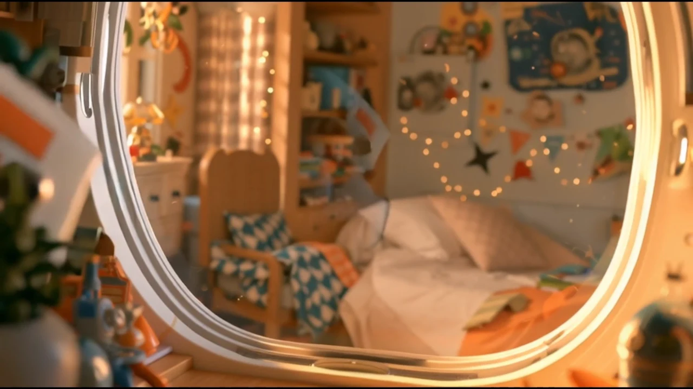
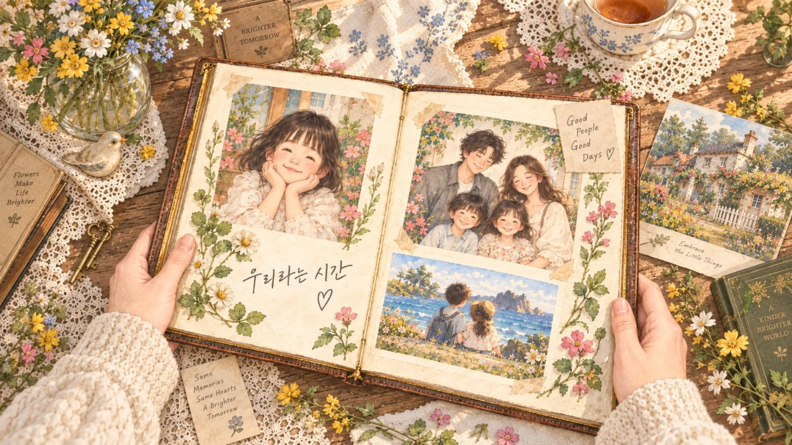

VIDEO PROJECT
First. Space ↗
우주여행을 주제로 한 영상 프로젝트.
원본 사운드와 함께 감상해보세요.

VIDEO PROJECT
Family story ↗
우리 가족의 이야기를 담은 영상 프로젝트.
원본 사운드와 함께 감상해보세요.
MOTION STUDY / 모션 스터디
CONCEPT FILM / MOTION STUDY
The quiet form — in motion.
빛과 실루엣, 소재의 흐름을 천천히 바라보는 시간.
AI 스틸 이미지에 카메라 움직임을 더한 무음 모션 샘플입니다.
FROM STILL TO STORY / 영상 콘텐츠 구상
브랜드의 장면 찾기
브랜드의 키워드와 제품의 특징을 바탕으로 영상의 분위기, 컬러, 공간을 정합니다.
흐름을 설계하기
주요 장면과 화면 비율을 정리하고, 캠페인 또는 숏폼에 어울리는 스토리보드를 구상합니다.
움직임으로 확장하기
스틸 이미지의 가능성을 움직임으로 탐색합니다. 향후 AI 영상 제작 워크플로로 확장할 영역입니다.